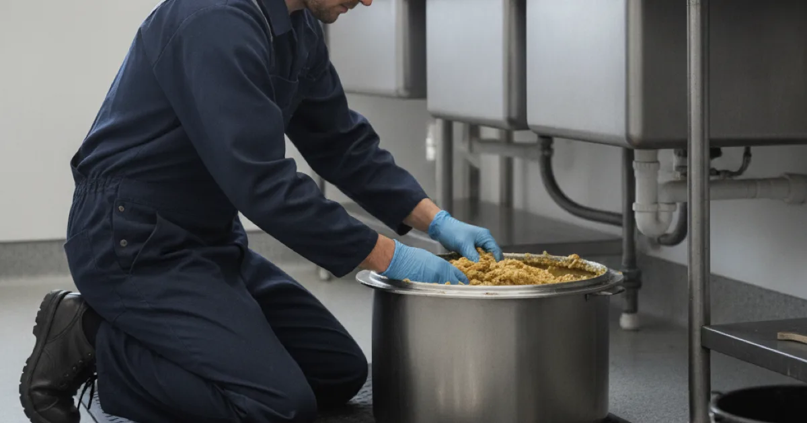

Grease Trap Cleaning in Westchester County, NY
A neglected grease trap causes backups, odors, and code trouble. Dan's Drains cleans and maintains grease traps for restaurants and small commercial kitchens across Westchester County.
- Licensed & Insured
- Same-Day Service Available
- Upfront Pricing
- 15+ Years Local Experience

Need a plumber in Westchester County? We can usually help the same day.
Why Grease Trap Cleaning Matters
A grease trap catches fats, oils, and grease before they enter the sewer. When it fills up, grease escapes into the line, causing backups, foul odors, and potential code violations for a food business.
Regular cleaning keeps the kitchen running and the drains flowing.
Signs Your Grease Trap Needs Cleaning
Watch for these signs the trap is overdue:
- Slow drains in the kitchen.
- Foul, greasy odors near drains or the trap.
- Grease showing up where it should not.
- An approaching scheduled service date.
Staying ahead of it prevents an emergency backup during service.
Talk to a local Westchester County plumber today.
How We Clean a Grease Trap
We clean out the accumulated grease and solids, check that the trap is functioning, and confirm the connected drains flow properly. Keeping to a regular schedule is what prevents surprises.
If grease has already clogged the line, we clear it with high-pressure line cleaning as needed.
Commercial Kitchens in Westchester
Restaurants and small food businesses across the county rely on well-maintained grease traps to stay compliant and avoid backups during busy service. A missed cleaning can shut a kitchen down fast.
Proper grease handling protects the sewer system, in line with EPA guidance on keeping fats and grease out of sewers. We keep your trap in good shape.
When to Call a Pro
Call us to set up regular grease trap cleaning, or when you notice slow kitchen drains or odors. Staying on schedule keeps your kitchen open and compliant.
For a full-service kitchen, this pairs naturally with our other commercial plumbing services.
Frequently Asked Questions
How often should a grease trap be cleaned?
It depends on your kitchen's volume and trap size, but many need cleaning on a regular schedule to stay compliant and avoid backups. We help you set the right interval.
What happens if I skip grease trap cleaning?
Grease escapes into the line, causing slow drains, backups, odors, and potential code violations — any of which can disrupt service.
Do you offer scheduled service?
Yes. Regular scheduled cleaning is the best way to prevent surprises, and we can set up an interval that fits your kitchen.
Can a full grease trap cause a backup?
Yes. When the trap fills, grease enters the drain line and can clog it, backing up the kitchen. Regular cleaning prevents it.
Do you handle the drain line too if it clogs?
Yes. If grease has already reached the line, we clear it with high-pressure jetting as part of getting the kitchen flowing again.
Ready to book? Reach Dan’s Drains for fast, upfront plumbing help.